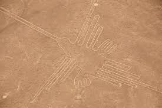
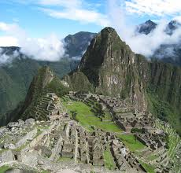
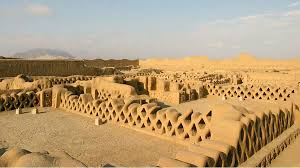

El Perú, oficialmente la República del Perú, es un país soberano del oeste de América del Sur. El océano Pacífico bordea su costa y limita con Ecuador y Colombia al norte, Brasil al este, y Bolivia y Chile al sureste. Su territorio se compone de diversos paisajes: los valles, las mesetas y las altas cumbres de los Andes se despliegan al oeste hacia la costa desértica y al este hacia la Amazonia. Es uno de los países con mayor diversidad biológica y mayores recursos minerales del mundo.1617
Las siete maravillas de Perú es una lista de las siete construcciones o lugares naturales considerados emblemáticos del Perú. Esta lista fue el resultado de una encuesta en línea realizada por el canal televisivo de Panamericana.1 En 2008 a raíz de que el año anterior fue elegida como maravilla natural del mundo la ciudadela incaica de Machu Picchu, también se puede observar las otras finalistas que no ganaron el concurso.
Las Líneas de Nazca son geoglifos trazados en el suelo de una llanura desértica entre los años 500 aC. y 500 dC., cubren un área mayor de 450 Km²., las líneas plantean uno de los mayores enigmas de la arqueología mundial debido a su número, naturaleza, tamaño y continuidad.
Los geoglifos representan criaturas vivas, vegetales estilizados, seres fantásticos y figuras geométricas de varios kilómetros de longitud. Se supone que tuvieron una función ritual vinculada a la astronomía.
Las Líneas de Nazca se ubican sobre la Pampa Jumana y San José, entre el kilómetro 419 y el kilómetro 465 de la carretera Panamericana Sur, a 25 Km. desde la ciudad de Nazca, en el departamento de Ica
Macchu PicchuEl Santuario Histórico – Parque Arqueológico Nacional de Machupicchu (SHM-PANM) es un área cultural y natural inscrita en la Lista del Patrimonio Mundial de la UNESCO. Con una extensión de 37302 hectáreas, es una de las áreas con mayor biodiversidad del Perú y alberga más de 60 monumentos arqueológicos articulados mediante una compleja red de caminos Inka.
El monumento más importante del SHM-PANM es la llaqta o Ciudad Inka de Machupicchu, que fue planificada y construida alrededor del año 1450 d.C. durante el gobierno del Inka Pachakuti. La obra demandó la participación de especialistas en arquitectura, ingeniería y astronomía, además de una gran cantidad de mano de obra. Más del 50% del esfuerzo requerido en su edificación fue empleado en la preparación del terreno, cimentación y sistema de drenaje. Su edificación responde a la necesidad del Estado Inka de contar con un centro religioso, político y administrativo dentro de un espacio sagrado considerado el nexo entre los Andes y la Amazonía.
La llaqta de Machupicchu fue abandonada durante la segunda mitad del siglo XVI; sin embargo, nunca estuvo perdida ya que fue visitada y habitada ocasionalmente. Existen documentos coloniales que se refieren a la llaqta de Machupicchu como el "Asiento de los Incas" o el “Pueblo Antiguo del Inga Nombrado Guaynapicchu". En 1874, el ingeniero Herman Göhring elaboró un documento cartográfico en el que se presentan por primera vez los topónimos "Machu Picchu" y "Huaina Picchu". En 1911, el profesor Hiram Bingham visitó la llaqta y quedó impactado con su belleza y majestuosidad. Al año siguiente, retornó con un equipo multidisciplinario de profesionales quienes realizaron excavaciones e investigaciones en la zona.
 clic hereEn la costa norte del Perú, sobre el valle de Moche, se erige una impresionante ciudadela hecha de adobe que es considerada patrimonio Cultural de la Humanidad: Chan Chan. Este milenario atractivo turístico se encuentra ubicado a 5 km de la Ciudad de Trujillo, en La Libertad, expandiéndose en un amplio territorio de unos 20 km2. Chan Chan agrupa a diez ciudadelas amuralladas de la antigua cultura Chimu, por eso es catalogada como la construcción hecha de adobe más grande de América. En sus paredes resaltan decorados en alto relieve con hermosas figuras grabadas en variadas formas: Figuras geométricas, aves, peces, entre otras.
